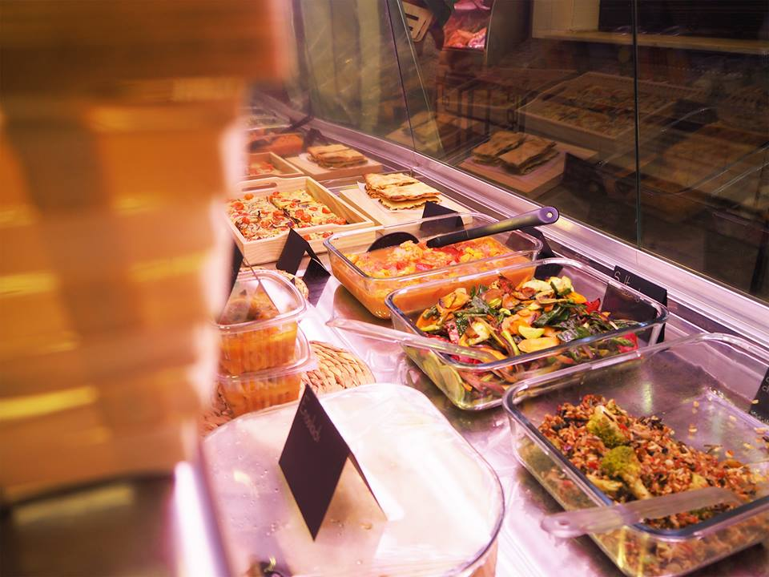

MUERDE VERDE
Comida saludable para llevar

Muede Verde, comida saludable para llevar
En Muerde Verde ofrecemos comida saludable para llevar basada principalmente en el uso de vegetales, legumbres y cereales. No utilizamos productos industriales para conseguir una cocina lo más natural posible.
También pensamos en las personas con intolerancias alimenticias y evitamos el uso de trigo, lactosa o huevo entre otros.Todos los platos están elaborados por nosotros en el mismo puesto del Mercado.

Contacta con nosotros |
Donde estamos
© Copyright Muerde Verde